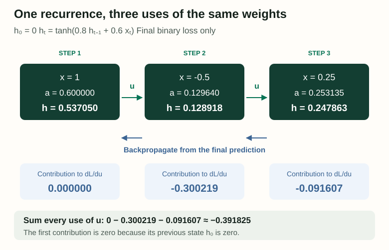
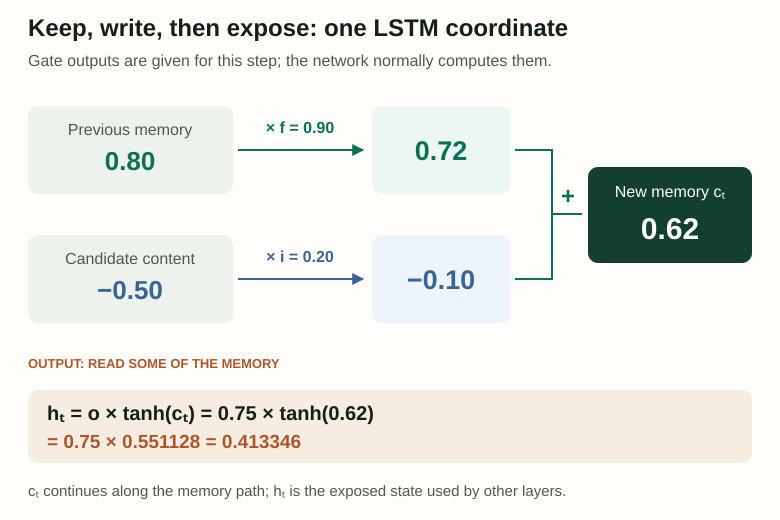
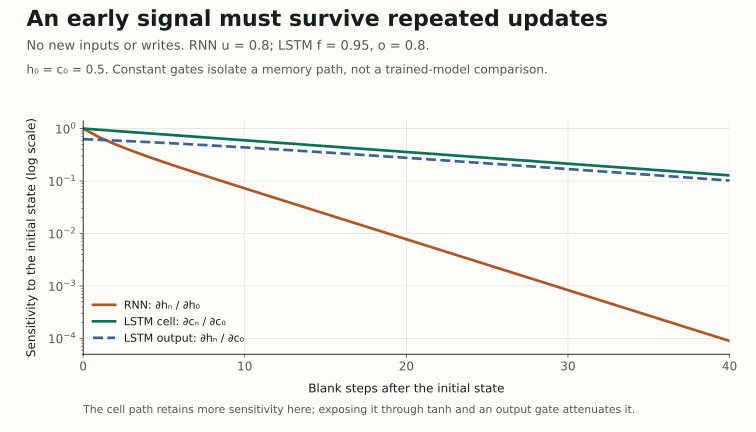
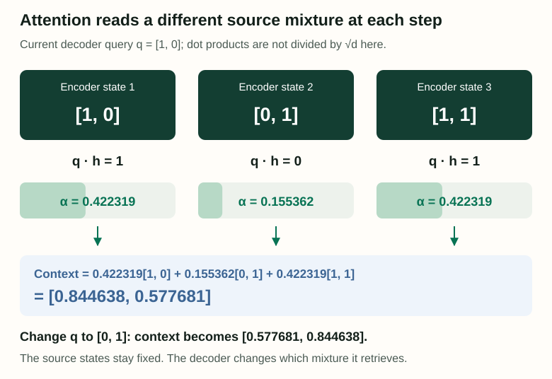

14 / Carry information through time
RNNs and LSTMs: How a Sequence Carries Its Past
Imagine reading a sentence through a narrow opening that reveals one word at a time. You can keep notes, but you cannot look back at the page. A recurrent network works with a similar constraint: each step updates a state that must carry useful evidence into the future. Understanding that update makes its strengths, training difficulties and gated alternatives much easier to see.
What should the next state preserve, what should it change, and what should the current prediction be allowed to read? A simple RNN combines those jobs. An LSTM gives them more separate controls.
An original companion to Jurafsky and Martin’s Chapter 14: RNNs and LSTMs, August 19, 2026 draft, §§14.1–14.8. The examples, diagrams and lab below are independently constructed. Familiarity with vectors, sigmoid, tanh and gradients from Chapter 6 is helpful.
1. A state is a learned summary, not a transcript
At position t, a simple recurrent neural network receives an input vector xt and its previous hidden state ht−1. It combines them with learned matrices, adds a bias, and applies a nonlinearity. Using column vectors:
ht = tanh(at)
pt = softmax(Vht + bout)
If inputs have din components and states have dh, W is dh × din and U is dh × dh. V maps the state to the task’s output classes. Biases are explicit here; the chapter often omits them to simplify notation. The tanh function maps each component into (−1, 1), allowing positive and negative features.
The same U and W operate at every step. The values of the states change; the parameters do not change during a forward pass. Unrolling the network draws repeated uses of one computation, not independently trained networks for different positions. A sequence of length three and one of length thirty can therefore use the same parameters.
The state has access, in principle, to all earlier inputs through the chain of updates. But access is not perfect recall. A fixed-size vector must represent whichever distinctions training makes useful, and later inputs can overwrite earlier evidence. “No fixed context window” does not mean “every earlier word remains recoverable.”
A three-step calculation you can check by hand
Use one-dimensional inputs [1, −0.5, 0.25], initial state h0 = 0, recurrent weight u = 0.8 and input weight w = 0.6. These numbers are invented scalar features, not meaningful word embeddings. Let the bias be zero:
h2 = tanh(0.8 × 0.537050 − 0.3) = 0.128918
h3 = tanh(0.8 × 0.128918 + 0.15) = 0.247863
The negative second input weakens the positive state without erasing it. Reversing the inputs generally produces a different final state because each input encounters a different history. A bag of counts would discard that order before classification; this recurrence can represent it.
For a binary sequence classifier, choose final logit z = 2h3. The sigmoid gives P(y = 1) = 0.621454. If the correct label is 1, the binary cross-entropy is −ln(0.621454) = 0.475693 nats. We score only the final prediction in this example, so there are no intermediate classification losses.
2. Backpropagation through time adds every use of a weight
The final loss depends on h3, which depends on h2, which depends on h1. Backpropagation follows these dependencies in reverse. Its name changes to backpropagation through time, or BPTT, but its arithmetic is still the chain rule on a computation graph.
Let δt = ∂L/∂at, the derivative with respect to the input of tanh. For the final binary loss, ∂L/∂z = p − y. Because z = 2h3, the derivative arriving at h3 is 2(p − 1). The derivative of tanh at a state value h is 1 − h².
δ2 = uδ3(1 − h2²) = −0.559015
δ1 = uδ2(1 − h1²) = −0.318226
Each at contains u multiplied by the previous state. Because all three occurrences refer to the same parameter, its gradient is a sum:
≈ 0 − 0.300219 − 0.091607
≈ −0.391825 (sum computed before rounding)

On narrow screens, scroll horizontally to inspect the complete diagram.
Likewise, ∂L/∂w = Σδtxt = −0.216363. Updating only u with learning rate 0.1 gives u′ = 0.839183. Recomputing the whole forward pass reduces the loss to 0.460094. This is a local demonstration, not a promise that arbitrarily large updates will help. The accompanying script checks the analytic gradients against finite differences.
For a language model with a loss at every position, a state receives gradient from its own prediction and from later states. Both contributions must be added. With long sequences, truncated BPTT limits how far a training gradient travels. Carrying a state across a chunk boundary while detaching it preserves forward context but stops gradient flow through that boundary. Resetting the state discards that context too. These are different operations.
Why distant supervision becomes difficult
In this scalar tanh network, one recurrent step contributes the factor u(1 − ht²) to sensitivity. Over many steps, factors multiply. Twenty factors of 0.5 give about 0.000000954; twenty factors of 1.5 give about 3325.26. The former makes an early influence hard to learn from; the latter can make updates unstable.
In a vector network, the corresponding factors are Jacobian matrices, not a single scalar. Saturated tanh units can attenuate gradients even when the recurrent weights are large. Gradient norm clipping can limit an exploding update, but it cannot reconstruct a gradient that has already vanished. This training extension is developed in Pascanu, Mikolov and Bengio’s analysis of recurrent-network optimization.
3. The recurrent core stays; the prediction task changes
A recurrent state does not dictate which labels the model should produce. The head and loss attach the same underlying sequence computation to different tasks. Keep the time alignment explicit:
| Task | Target | Where the loss is attached |
|---|---|---|
| Sequence labeling | A tag for the current token | Each labeled position |
| Sequence classification | One label for the whole input | A final-state or pooled-state classifier |
| Language modeling | The next token | Each scored next-token prediction |
For language modeling, retrieve an embedding et for token wt, update ht, and score the next token wt+1. The model’s vocabulary distribution is softmax(Vht + bout). The token loss is −ln pt[wt+1]. A beginning marker supplies context for the first word; an end marker can teach when to stop.
Training ordinarily feeds the actual preceding token, even when the model predicted something else. This is teacher forcing. During generation, the next input is instead the token selected from the model’s own distribution. A wrong prediction can therefore change every later context. Greedy selection and random sampling are different decoding rules applied to the same probabilities.
If embeddings and hidden states both have dimension d, an embedding matrix E of shape d × vocabulary-size can also supply the output matrix through V = ET. This weight tying reuses each token’s vector for input lookup and output scoring. It saves a second vocabulary-sized matrix while letting gradients from both roles train the shared parameters; it does not force all token scores to be equal.
For sequence classification, the last state is one possible summary. Mean or max pooling over states is another. Pooling can provide more direct routes from earlier states to the classifier, but each state’s contents still depend on its contextual computation. Padding positions must be excluded from pooling and supervised losses, and independent documents should not accidentally inherit each other’s recurrent state.
4. Depth and direction answer different questions
A stacked RNN passes each lower layer’s hidden state upward as the next layer’s input at the same position. Each layer also has its own recurrence through time. Depth asks for several stages of representation; recurrence asks for a state carried across positions. Adding a layer does not turn a sequential dependency into a parallel one.
A bidirectional RNN runs separate forward and backward recurrences over the observed sequence. At position t, concatenate their states: ht = [htforward; htbackward]. If each direction has d components, the concatenated representation has 2d. A tagger can now use evidence on both sides of an ambiguous token.
That right-hand evidence must actually be available. A bidirectional encoder is natural when the complete source sentence has arrived. A causal next-token model cannot read the unknown future through a backward state without leaking its target. Similarly, a streaming application must account for any wait imposed by future context. For whole-sequence classification, the final forward state and final backward state correspond to opposite ends of the original sequence.
5. An LSTM carries memory and an exposed state
A simple RNN repeatedly rewrites the same hidden vector. An LSTM adds a cell state ct that carries memory, alongside an exposed hidden state ht. Here c means cell memory; the encoder-decoder context later in the article will use a different symbol to avoid confusing the two.
Each gate is a learned vector with sigmoid outputs between zero and one. Gates are not usually hard yes/no decisions. Each coordinate can be partly retained or partly written, and different coordinates can respond differently to the same input. Using separate learned affine transforms of xt and ht−1:
it = σ(Uiht−1 + Wixt + bi)
gt = tanh(Ught−1 + Wgxt + bg)
ct = ft ⊙ ct−1 + it ⊙ gt
ot = σ(Uoht−1 + Woxt + bo)
ht = ot ⊙ tanh(ct)
The forget gate f controls retained memory. The input gate i, called the add gate in the chapter, controls the candidate g that is written. The output gate o controls how much transformed memory is exposed as h. The symbol ⊙ means elementwise multiplication, not a dot product. Unlike the sigmoid gates, the tanh candidate can be negative, so a write can reduce a positive memory coordinate.
Take one coordinate with previous memory 0.8, forget gate 0.9, input gate 0.2, candidate −0.5 and output gate 0.75. Retain 0.9 × 0.8 = 0.72 and write 0.2 × (−0.5) = −0.10. The new memory is 0.62; the exposed hidden state is 0.75 tanh(0.62) = 0.413346.

Scroll horizontally on narrow screens to follow both memory contributions.
These gate outputs are feasible: sigmoid preactivations ln 9, ln 0.25 and ln 3 produce 0.9, 0.2 and 0.75; tanh(−0.549306) produces approximately −0.5. But there is no requirement that a coordinate literally mean “plural subject” or “topic.” Such interpretations require evidence about a trained model.
The additive memory update creates a useful direct path through time. Holding gates fixed, ∂ct/∂ct−1 along that path is ft. Across twenty steps, constant f = 0.9 retains a factor 0.121577; f = 0.99 retains 0.817907. In a full LSTM, gates depend on earlier states, so additional derivative paths also exist. The forget-gate product describes the direct cell path, not the entire network Jacobian or a universal cure for vanishing gradients.
6. Lab: separate retained memory from readable output
This controlled experiment starts an RNN at h0 = 0.5 and an LSTM cell at c0 = 0.5. Each later RNN input is zero, giving ht = tanh(uht−1). The LSTM makes no new writes, uses a constant forget gate f, and exposes ht = 0.8 tanh(ct). Its cell is therefore cn = 0.5fn. We deliberately freeze the gates to isolate one mechanism.
Sensitivity measures how much a final value would change under a tiny change to the initial state. It is a derivative, not a memory-accuracy score. The RNN and LSTM outputs have different starting exposure, so these curves are an arithmetic comparison of paths, not a fair performance benchmark between trained architectures.

Scroll horizontally on narrow screens to inspect the axes and legend.
| RNN hidden state hn | 0.047167 |
|---|---|
| RNN ∂hn/∂h0 | 0.072631 |
| LSTM cell cn | 0.299368 |
| LSTM cell ∂cn/∂c0 | 0.598737 |
| LSTM exposed hn | |
| LSTM exposed ∂hn/∂c0 |
f = 1 is an ideal limiting gate. A sigmoid with finite preactivation only approaches one. With no writes, this limit preserves the cell exactly; output gating and tanh still affect its exposure.
Inspect every step and derivative
The initial row is step zero. Small nonzero values use scientific notation; for example, 1.0e−5 means 0.00001. Scroll the table horizontally to inspect all columns.
| Step | RNN h | ∂h/∂h₀ | LSTM c | ∂c/∂c₀ | LSTM h | ∂h/∂c₀ |
|---|
First increase the number of steps. Then move f toward one and watch cell sensitivity. Set u = 0 to remove all dependence on the RNN’s initial state after one step. Finally increase u above one: the state may persist while its sensitivity still shrinks as tanh saturates. A persistent number and a strong gradient are not the same thing.
The lab computes the RNN derivative by multiplying u(1 − ht²). For the frozen-gate LSTM, cell sensitivity is fn and exposed sensitivity is 0.8[1 − tanh²(cn)]fn. Real inputs, new writes and state-dependent gates create additional interactions that this experiment intentionally leaves out.
7. An encoder-decoder separates source reading from target writing
Sequence labeling aligns one tag with each input token. Translation and summarization need a different contract: output length and order can differ from the source. An encoder reads source tokens into states; a decoder predicts target tokens conditioned on the source representation and the earlier target prefix.
A basic recurrent encoder compresses the source into its final state, which initializes the decoder or is supplied to its updates. If dimensions differ, a learned projection can connect them. With LSTM modules, the implementation must specify how both hidden and cell states are initialized. The encoder and decoder can have distinct parameters and vocabularies.
For a tiny translation pair, let the source be “good morning” and the target “buenos días <eos>,” treating each displayed item as one token. The decoder inputs during teacher-forced training are [<bos>, buenos, días], and the targets are [buenos, días, <eos>]. If their correct-token probabilities are [0.6, 0.5, 0.8], the target-sequence likelihood is 0.24 and mean negative log likelihood is 0.475705 nats. Source positions condition these predictions but need not have their own target-generation losses.
The loss propagates through decoder computations into the source representation and encoder. During inference the decoder consumes its own selected tokens, stopping at an end marker or a length limit. The source and target are paired data during training; the target is not available as decoder input at inference. Sutskever, Vinyals and Le’s sequence-to-sequence paper is a primary example of training LSTM encoders and decoders end to end.
The final-state connection creates a bottleneck: everything needed later must survive in that one source summary. Longer or information-dense inputs can make this burden harder. Attention gives the decoder a way to revisit a collection of source representations while it writes.
8. Attention lets the decoder ask a new question at each step
Keep all encoder states H = [h1e, …, hne]. At target step t, use the previous decoder state q = ht−1d to score them. Normalize those scores, and form a weighted source mixture rt. We use r here so it cannot be confused with LSTM cell memory c.
αtj = exp(stj) / Σk exp(stk)
rt = Σj αtjhje
The decoder update can combine rt, its previous state and the previous target embedding before an output projection and vocabulary softmax. The chapter’s dot-product example does not include the transformer’s 1/√d scaling; inserting it would change the numbers below. A bilinear score qTWshje instead learns a compatibility transform and can connect differently sized encoder and decoder states.
Choose encoder states [1, 0], [0, 1], [1, 1] and query [1, 0]. The scores are [1, 0, 1]. Softmax produces weights [0.422319, 0.155362, 0.422319], whose sum is one. The weighted context is [0.844638, 0.577681]. Change the query to [0, 1] and the context becomes [0.577681, 0.844638], even though the stored source states are unchanged.

Scroll horizontally on narrow screens to compare all three source contributions.
This is source-to-target attention inside a recurrent encoder-decoder. It differs from comparing positions within one sequence in self-attention. The original Bahdanau, Cho and Bengio attention model learns an alignment score rather than using this simplified dot product. Both approaches replace a single fixed source summary with a context that can change during decoding.
Attention does not remove the recurrence from this decoder: the next query still depends on earlier target computation. It also requires retaining the encoder states rather than only one final summary. Seen beside the transformer chapter, this makes the architectural change concrete: sequence order, information retrieval and recurrent state updates are separate design choices.
Reproduce the arithmetic
The standard-library Python script reproduces the recurrence, BPTT update, LSTM gate example, encoder-decoder attention and lab. It verifies four shared-parameter gradients and all 63,240 lab settings against finite differences. The figure generator recreates the four original SVGs; its sensitivity plot requires Matplotlib. All calculations use unrounded intermediates.
Why can the recurrent weight learn from several positions?
Each position uses the same parameter. Its derivative is the sum of every path through which those uses affect the loss, including indirect effects through later states.
Does a closed output gate necessarily erase an LSTM’s memory?
No. A small output gate limits the current exposed hidden state. The cell’s retention and writing calculations determine what remains available for later steps.
Can a bidirectional source encoder feed a causal decoder?
Yes, when the complete source is available. The encoder may use both source directions while the decoder generates target tokens using only the available target prefix.
Sources and coverage
SLP Chapter 14, August 19, 2026: §14.1 recurrence and training; §14.2 language modeling and weight tying; §§14.3–14.4 task heads, stacking and bidirectionality; §14.5 LSTMs; §14.6 architecture comparison; §§14.7–14.8 encoder-decoders and attention. The chapter only briefly mentions GRUs, so this companion concentrates on its developed LSTM account.
Primary supplements: Pascanu et al., recurrent-network optimization; Sutskever et al., sequence-to-sequence learning; Bahdanau et al., learned alignment and translation. The toy derivatives and sensitivity comparisons are explanatory constructions, not reported research results.